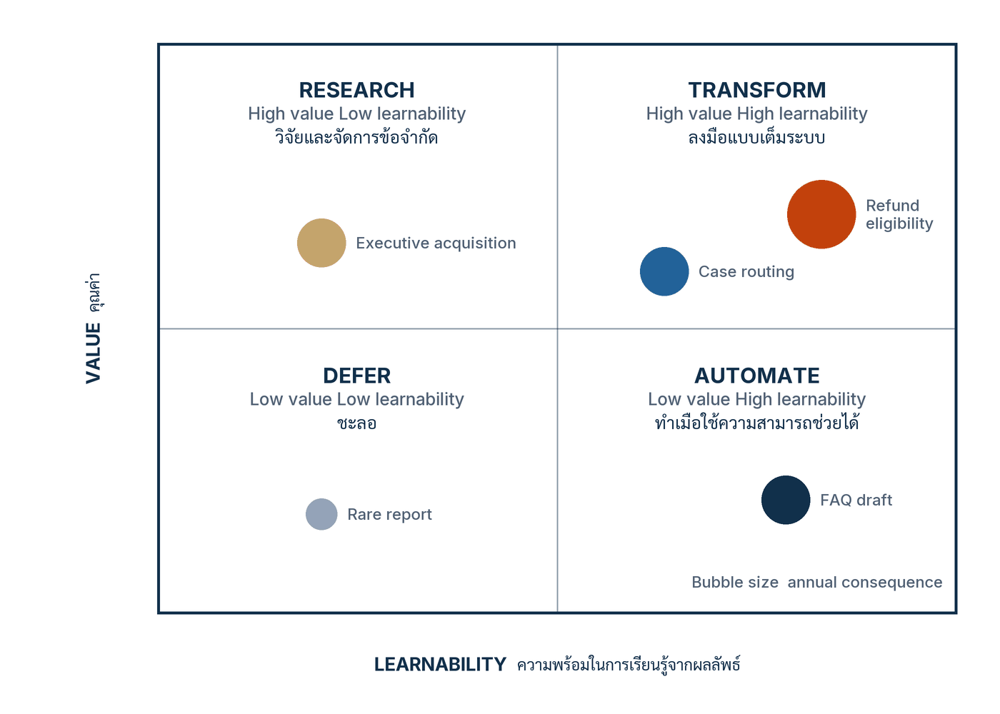

ในบทความนี้
- ทำไม use-case list ถึงจัดลำดับผิด — หน้าจอเดียวกันแต่ภาระผูกพันคนละโลก
- บัญชีรายการการตัดสินใจ — เริ่มจากการตัดสินใจที่เกิดซ้ำ ไม่ใช่จากที่ที่โมเดลใส่ลงไปได้
- สามมิติที่ต้องวัดแยกกัน — อำนาจตัดสินใจ ความขาดไม่ได้ และระดับผลกระทบ
- คุณค่า × ความพร้อมในการเรียนรู้ — 2×2 ที่บอกว่าควรลงแรงตรงไหนก่อน
- สี่ทางเลือกของพอร์ต — ขยาย จำกัดขอบเขต ออกแบบใหม่ ยุติ และกรณี HarborLight
- เวิร์กช็อป Decision portfolio triage หกขั้น และการออกแบบ removal test
- ตัวชี้วัดสำคัญพร้อมช่อง Scorecard และรูปแบบความล้มเหลวหกแบบ
- ก้าวต่อไป — จากการตัดสินใจที่เลือกแล้ว สู่การออกแบบกระบวนงานใหม่ทั้งสาย
In this post
- Why a use-case list ranks the wrong things — the same screen, obligations from different worlds
- The decision inventory — start from recurring decisions, not from where a model could be dropped in
- Three dimensions that must be measured separately — authority, indispensability and consequence
- Value × learnability — the 2×2 that says where to spend effort first
- The four portfolio moves — Scale, Contain, Redesign, Retire, and the HarborLight case
- The six-step Decision portfolio triage workshop, and how to design a removal test
- The metrics that matter, with a Scorecard column, and six failure patterns
- The road ahead — from a chosen decision to redesigning the whole workflow
🤔 แอปสองตัวหน้าตาเป็น chat เหมือนกัน ทำไมภาระผูกพันต่างกันคนละโลก?
ตอนที่แล้ว Five Maturity Levels จบด้วยประโยคที่ค้างไว้ว่า ระดับวุฒิภาวะที่ "ถูก" ของ workflow หนึ่ง ๆ ไม่ได้ขึ้นกับความทะเยอทะยานขององค์กร แต่ขึ้นกับว่าการตัดสินใจนั้นให้อำนาจ AI ไว้แค่ไหน ขาดโมเดลแล้วยังทำงานได้หรือไม่ และถ้าพลาดขึ้นมาความเสียหายกว้างและย้อนกลับยากเพียงใด ตอนนี้คือเครื่องมือที่ตอบสามคำถามนั้นพร้อมกัน — และเป็นเครื่องมือที่ผมใช้แทน use-case list มาหลายปีแล้ว
คำตอบสั้น ๆ ของทั้งบทความคือ เลิกทำ use-case list แล้วทำ พอร์ตโฟลิโอการตัดสินใจ (decision portfolio) แทน — จำแนกทุกงานด้วยสามมิติที่ห้ามรวมเป็นคะแนนเดียว แล้วตัดสินหนึ่งในสี่ทาง คือ ขยาย จำกัดขอบเขต ออกแบบใหม่ หรือ ยุติ สำหรับ 90 วันข้างหน้า พร้อมระบุไว้ล่วงหน้าว่าหลักฐานแบบไหนจะทำให้คำตัดสินนั้นเปลี่ยน
1. หน้าจอเดียวกัน ภาระผูกพันคนละโลก
บทที่ 3 ของหนังสือ AI Transformation as an Organizational Core เปิดด้วยประโยคที่ผมคิดว่าควรถูกแปะไว้หน้าห้องประชุมคณะกรรมการดิจิทัลทุกองค์กร: "A use case list tells where technology appears. A decision portfolio shows where authority dependency value and exposure accumulate." — รายการ use case บอกว่าเทคโนโลยีไปโผล่ตรงไหน แต่พอร์ตโฟลิโอการตัดสินใจบอกว่า อำนาจ การพึ่งพา คุณค่า และความเสี่ยง ไปสะสมอยู่ที่ใด
ความต่างนี้ไม่ใช่เรื่องคำพูด หนังสือวางตัวอย่างไว้ให้เห็นภาพภายในสองบรรทัด: ระบบสองตัวที่มีหน้าจอแชตคล้ายกันอาจสร้างภาระต่างกันอย่างสิ้นเชิง เครื่องมือสรุปเอกสารที่นักวิเคราะห์ตรวจทุกครั้งไม่เท่ากับ Agent ที่คืนเงินให้ลูกค้าได้จริง แม้ทั้งคู่จะเรียกโมเดลตัวเดียวกัน ผ่าน API เดียวกัน และถูกนำเสนอในสไลด์แผ่นเดียวกันภายใต้หัวข้อ "AI สำหรับงานบริการลูกค้า"
ที่มันไม่เท่ากันเพราะสิ่งที่ระบบ ปล่อยออกไป ต่างกัน เครื่องมือสรุปปล่อยข้อความให้คนหนึ่งคนอ่านและคนนั้นรับผิดชอบต่อ ส่วน Agent คืนเงินปล่อย ผลจริงทางการเงิน ออกไปสู่โลกภายนอกโดยไม่มีใครขวางกลางทาง โมเดลเดียวกันไม่ได้ทำให้สิทธิ์เท่ากัน ไม่ได้ทำให้จำนวนผู้ได้รับผลเท่ากัน และไม่ได้ทำให้ต้นทุนการกู้คืนเท่ากัน
use-case list เกิดขึ้นได้อย่างไร และมันซ่อนอะไร
รูปแบบที่ผมเห็นซ้ำแล้วซ้ำอีกคือ องค์กรตั้งคณะทำงาน AI แล้วส่งแบบฟอร์มไปทุกหน่วยงานว่า "ช่วยเสนอ use case ที่หน่วยงานอยากใช้ AI" ไม่นานก็ได้รายการกลับมาเป็นตั้ง เรียงตามผลประหยัดที่แต่ละหน่วยงานประเมินกันเอง แล้วที่ประชุมก็หยิบอันดับต้น ๆ ไปทำ pilot
กระบวนการนี้ดูเป็นระเบียบ แต่มันเลือกผิดอย่างเป็นระบบด้วยเหตุผลสามข้อ ข้อแรก มันจัดลำดับด้วยตัวเลขที่ยังไม่มีใครพิสูจน์ — ผลประหยัดที่ "คาดการณ์" คือคำสัญญา ไม่ใช่หลักฐาน ข้อสอง มันเป็นการแข่งขันภายในระหว่างหน่วยงาน หน่วยที่เขียนข้อเสนอเก่งจะชนะ ไม่ใช่หน่วยที่มีการตัดสินใจซึ่งมีมูลค่าสูงสุด และข้อสาม มันมองไม่เห็นการตัดสินใจเล็ก ๆ ที่เกิดวันละหลายพันครั้ง เพราะไม่มีใครคิดว่ามันเป็น "use case" ทั้งที่ปริมาณสะสมของมันมหาศาลกว่าการตัดสินใจระดับผู้บริหารหลายเท่า
| Use-case list | Decision portfolio | |
|---|---|---|
| หน่วยของรายการ | ระบบหรือเครื่องมือหนึ่งตัว | การตัดสินใจที่เกิดซ้ำหนึ่งรายการ |
| คำถามที่ตอบ | เราจะเอาโมเดลไปใส่ตรงไหนได้บ้าง | อำนาจ การพึ่งพา คุณค่า และความเสี่ยงสะสมอยู่ที่ใด |
| จัดลำดับด้วย | ผลประหยัดที่คาดการณ์ไว้ | สามมิติที่วัดแยกกัน แล้วจึงดูคุณค่าและหลักฐาน |
| สิ่งที่มองไม่เห็น | สิทธิ์จริงของระบบ จำนวนผู้ได้รับผล และการย้อนกลับ | — เพราะทั้งสามข้อคือคอลัมน์บังคับ |
| ผลลัพธ์ของการประชุม | รายชื่อ pilot สิบตัวที่ไม่มีเงื่อนไขจบ | คำตัดสินหนึ่งในสี่ทางต่อหนึ่งงาน พร้อมกำหนดทบทวน |
ข้อสังเกตที่สำคัญที่สุดของตารางนี้อยู่แถวสุดท้าย: use-case list จบลงด้วย รายชื่อ ส่วนพอร์ตโฟลิโอการตัดสินใจจบลงด้วย คำตัดสิน รายชื่อไม่มีวันหมดอายุด้วยตัวเอง จึงเป็นเหตุผลที่ pilot ในหลายองค์กรอยู่ยาวเป็นปีโดยไม่มีใครกล้าปิด — ไม่มีใครเคยตกลงกันไว้ตั้งแต่แรกว่าเงื่อนไขปิดคืออะไร
การจำแนกตามบริบทไม่ใช่ความเห็นเฉพาะของหนังสือเล่มนี้
ก่อนจะไปดูเครื่องมือ ผมอยากปักหมุดไว้ว่าหลักการ "จำแนกตามบริบท ไม่ใช่ตามหน้าตาเทคโนโลยี" มีแหล่งอ้างอิงระดับสากลรองรับอยู่แล้ว กรอบจำแนกระบบ AI ของ OECD (ฉบับกุมภาพันธ์ 2022) จำแนกระบบตามบริบทด้วยห้ามิติ — People & Planet, Economic Context, Data & Input, AI Model และ Task & Output — เพื่อใช้ในเชิงนโยบายสำหรับผู้กำหนดนโยบายและผู้กำกับดูแล ไม่ได้ให้คะแนนความเสี่ยงรวมเป็นตัวเลขเดียว[1] เอกสารฉบับนั้นยังระบุเองด้วยว่า "actionable AI system risk methodology" เป็นงานเฟสถัดไป ไม่ใช่สิ่งที่กรอบปี 2022 ให้
ฝั่ง NIST ก็เดินทางเดียวกัน AI RMF 1.0 (26 มกราคม 2023) มีสี่ฟังก์ชันหลักคือ Govern, Map, Measure และ Manage โดยฟังก์ชัน Map คือการ "สร้างบริบทเพื่อกำหนดกรอบความเสี่ยงของระบบ AI" และจบด้วยการตัดสินใจ go/no-go ครั้งแรกว่าจะออกแบบ พัฒนา หรือนำระบบขึ้นใช้หรือไม่[2] ขอย้ำให้ชัดว่ากรอบนี้ NIST ระบุเองว่า "intended for voluntary use" — เป็นกรอบสมัครใจ ไม่ใช่กฎหมาย[3] การใช้งานจริงในบริบทไทยยังต้องผ่านการทบทวนตามกฎหมายและตามภาคอุตสาหกรรมของตัวเองอยู่ดี
พูดอีกแบบคือ ทั้งสองกรอบเริ่มจาก "บริบท" ก่อนเสมอ ในขณะที่ use-case list เริ่มจาก "เทคโนโลยี" ก่อนเสมอ นั่นคือความผิดพลาดเชิงลำดับที่บทความนี้พยายามแก้ รายละเอียดว่าหนังสือย่อสองกรอบนี้ลงเหลือสามมิติได้อย่างไร อยู่ในหัวข้อ 3. สามมิติที่ต้องวัดแยกกัน
2. บัญชีรายการการตัดสินใจ — เริ่มจากการตัดสินใจ ไม่ใช่จากเทคโนโลยี
ขั้นก่อนพอร์ตโฟลิโอคือการทำ บัญชีรายการการตัดสินใจ (decision inventory) ซึ่งภาคผนวกของหนังสือให้นิยามไว้ว่าเป็น "ทะเบียนการตัดสินใจที่เกิดซ้ำ ระบุเจ้าของ ข้อมูลนำเข้า เวลา ผลกระทบ ผลงานปัจจุบัน และรูปแบบแบ่งงานระหว่างคนกับ AI ที่เป็นไปได้" สังเกตว่าคำนิยามนี้ไม่มีคำว่าโมเดล ไม่มีคำว่า use case และไม่มีคำว่าเทคโนโลยีอยู่เลยแม้แต่คำเดียว
ความต่างระหว่างการค้นหาสองแบบสรุปได้สั้น ๆ ว่า การค้นแบบเทคโนโลยีนำถามว่า "เราแทรกโมเดลเข้าไปตรงไหนได้" ส่วนการค้นแบบการตัดสินใจนำถามว่า "การเลือกที่เกิดซ้ำแบบใดเป็นตัวกำหนดคุณค่า ต้นทุน ความเสี่ยง ประสบการณ์ลูกค้า หรือผลสัมฤทธิ์ตามพันธกิจ" คำถามแรกได้คำตอบเป็นรายการเครื่องมือ คำถามที่สองได้คำตอบเป็นรายการที่องค์กรควบคุมได้จริง
สี่คุณสมบัติของผู้สมัครที่ดี
การตัดสินใจที่เป็นผู้สมัครที่ดีมักมีสี่คุณสมบัติพร้อมกัน — เกิดบ่อย มีผลสูง มีข้อมูลเพียงพอ และมี Feedback ให้รู้ผล[4] ทั้งสี่ข้อต้องมาด้วยกัน ไม่ใช่เลือกได้สามในสี่ เพราะแต่ละข้อทำหน้าที่คนละอย่าง:
- เกิดบ่อย (high frequency) — ปริมาณคือสิ่งที่ทำให้การปรับปรุงเล็ก ๆ คุ้มค่า และเป็นสิ่งที่ทำให้เก็บหลักฐานได้เร็วพอจะเรียนรู้ทัน การตัดสินใจปีละครั้งเรียนรู้ไม่ได้ในรอบชีวิตโครงการ
- มีผลสูง (high value) — ถ้าทำถูกหรือทำผิดแล้วไม่มีอะไรเปลี่ยน มันไม่คุ้มกับต้นทุนการกำกับดูแลที่ตามมา
- มีข้อมูลเพียงพอ (data richness) — ต้องมีข้อมูลนำเข้าที่บันทึกไว้จริง ไม่ใช่ความรู้ที่อยู่ในหัวคนเดียวและไม่เคยถูกเขียนลงที่ไหน
- มี Feedback ให้รู้ผล (available feedback) — ต้องรู้ในเวลาที่ยอมรับได้ว่าการตัดสินใจนั้นให้ผลอย่างไร ข้อนี้เป็นข้อที่ถูกมองข้ามบ่อยที่สุด และเป็นข้อที่กำหนดแกนนอนของ 2×2 ในหัวข้อ 4
เมื่อได้รายการแล้ว ให้บันทึกโครงสร้างของการตัดสินใจแต่ละรายการเป็นห้าส่วน คือ Prediction ที่ต้องใช้ Judgment ที่ใช้ตีความ Action ที่เกิดขึ้นจริง Outcome ที่สังเกตได้ และข้อจำกัดด้านจริยธรรมหรือความเป็นธรรมที่ครอบทั้งหมดอยู่[4] การแยกห้าส่วนนี้มีประโยชน์ทันทีเพราะมันชี้ว่า AI เข้าไปช่วยได้ที่ส่วนไหน — โดยมากคือ Prediction — และส่วนไหนยังเป็นของคนอยู่
ทะเบียนเจ็ดคอลัมน์
ทะเบียนที่หนังสือกำหนดมีเจ็ดคอลัมน์ตายตัว ผมแนะนำให้เปิดสเปรดชีตเดียวสำหรับทั้งองค์กร ไม่ใช่ให้แต่ละหน่วยงานทำของตัวเอง เพราะประโยชน์ครึ่งหนึ่งของทะเบียนนี้คือการเห็นว่าการตัดสินใจแบบเดียวกันเกิดซ้ำอยู่ในสามหน่วยงานโดยไม่มีใครรู้
| Register column | สิ่งที่ต้องบันทึก | ถือว่าครบเมื่อ |
|---|---|---|
| Decision | ชื่อการตัดสินใจที่เกิดซ้ำ เขียนเป็นกริยาที่มีผลจริง เช่น "อนุมัติวงเงินคืนสินค้า" ไม่ใช่ "ระบบช่วยงานฝ่ายบริการ" | คนนอกหน่วยงานอ่านแล้วรู้ว่าเกิดอะไรขึ้นกับใคร |
| Owner | ชื่อคน ไม่ใช่ชื่อฝ่าย คนที่ต้องตอบคำถามเมื่อผลออกมาผิด | มีชื่อเดียว และคนนั้นรู้ตัวว่าถูกใส่ชื่อ |
| Inputs | ข้อมูลนำเข้าที่ใช้จริงในวันนี้ พร้อมที่มาและความถี่ในการอัปเดต | ระบุแหล่งได้ทุกตัว และรู้ว่าตัวไหนยังอยู่ในหัวคน |
| Timing | ความถี่ที่เกิดขึ้น เวลาที่ต้องตัดสินให้เสร็จ และเวลาที่ผลจริงกลับมา | มีทั้งความถี่และระยะเวลารอ Feedback ไม่ใช่แค่ความถี่ |
| Consequence | ถ้าตัดสินผิดหนึ่งครั้งเกิดอะไรขึ้น ใครได้รับผล กี่คน แก้กลับได้ไหม ใช้เวลาเท่าไร | ตอบได้ครบทั้งความรุนแรง ขนาด และการย้อนกลับ |
| Current performance | ค่าฐานวันนี้ที่ยังไม่มี AI — ความแม่นยำ เวลา ต้นทุน หรืออัตราการแก้งาน | เป็นตัวเลขที่วัดจากงานจริง ไม่ใช่ค่าประมาณจากความทรงจำ |
| Candidate human–AI allocation | รูปแบบแบ่งงานที่เป็นไปได้ระหว่างคนกับ AI พร้อมระดับอำนาจที่ตั้งใจให้ | ระบุระดับอำนาจชัด และยังไม่ผูกกับผลิตภัณฑ์ยี่ห้อใด |
คอลัมน์ Current performance คือคอลัมน์ที่ล้มโครงการมากที่สุดในประสบการณ์ผม เพราะหลายองค์กรพบว่าตัวเองไม่รู้ค่าฐานของงานที่ทำอยู่ทุกวัน แล้วสิ่งที่เกิดขึ้นตามมาคือเมื่อระบบขึ้นใช้จริงไปสักพัก ไม่มีใครพิสูจน์ได้ว่า AI ทำให้ดีขึ้นจริงหรือไม่ ถ้าคอลัมน์นี้ว่าง ให้ถือว่างานนั้นยังไม่พร้อมเข้าพอร์ต — ไปเก็บค่าฐานก่อน
อีกข้อที่ต้องระวังคือคอลัมน์สุดท้าย มันคือ candidate allocation ไม่ใช่ข้อสรุป ตอนทำทะเบียนเรายังไม่ตัดสินอะไร เราแค่บันทึกว่ารูปแบบที่เป็นไปได้มีอะไรบ้าง การตัดสินเกิดขึ้นหลังจำแนกสามมิติเสร็จแล้วเท่านั้น
หมายเหตุด้านหลักฐาน: เนื้อหาเรื่องบัญชีรายการการตัดสินใจในหัวข้อนี้มาจากภาคผนวกของหนังสือ ซึ่งระบุตัวเองว่าเป็นการเรียบเรียงเชิงบรรณาธิการจากคำบรรยาย ไม่ใช่การถอดความคำต่อคำ ผมจึงเขียนเป็นการสรุปความ ไม่ใช่การอ้างคำพูด และไม่ควรอ่านว่าเป็นผลการศึกษาที่มีกลุ่มควบคุม
3. สามมิติที่ต้องวัดแยกกัน
เมื่อมีทะเบียนแล้ว ขั้นถัดไปคือจำแนก และหัวใจของทั้งบทอยู่ตรงนี้ — หนังสือแยกการจำแนกออกเป็นสามมิติ และย้ำว่าห้ามยุบรวมเป็นคะแนนเดียว เพราะแต่ละมิติอธิบายความจำเป็นในการควบคุมคนละแบบ
| Dimension | คำถามที่มิตินี้ถาม | หลักฐานที่ตอบได้ | Control ที่ตามมา |
|---|---|---|---|
| อำนาจตัดสินใจ Decision authority |
AI ทำได้แค่เสนอ ร่าง กระทำเมื่ออนุมัติ หรืออัตโนมัติ | สิทธิ์จริงในระบบ ไม่ใช่ระดับที่เขียนไว้ในเอกสาร | ด่านอนุมัติ ขอบเขตสิทธิ์ และการควบคุมก่อนเกิดผล |
| ความขาดไม่ได้ Model indispensability |
ถ้าแทนโมเดลด้วย Fallback แบบไม่ใช้โมเดล ผลงานตกต่ำกว่าเกณฑ์หรือไม่ | ผลการทดสอบถอดโมเดลบนชุดงานที่ประกาศไว้ล่วงหน้า | ความต่อเนื่องของบริการ แผนสำรอง และการลงทุน |
| ระดับผลกระทบ Consequence |
ข้อความหรือการกระทำที่ปล่อยออกไปสร้างอะไรได้บ้าง | ความรุนแรง การย้อนกลับ การตรวจพบ ขนาด สิทธิ์ ต้นทุนกู้คืน | ปริมาณ Assurance และความเข้มของการตรวจ |
มิติที่ 1 — อำนาจตัดสินใจ: บันไดสี่ขั้น
อำนาจตัดสินใจถามว่า AI ทำได้แค่ไหน คำตอบมีสี่ขั้นตายตัว และควรเขียนกำกับไว้ในทะเบียนทุกแถว
| Rung | AI ทำอะไรได้ | สิ่งที่ต้องเป็นจริงก่อนขึ้นขั้นนี้ | หลักฐานที่ต้องเก็บ |
|---|---|---|---|
| เสนอแนะ (Suggest) | ให้ตัวเลือกหรือข้อมูลประกอบ คนตัดสินทั้งหมด | คนมีเวลาพอจะอ่านและเห็นที่มาของข้อเสนอ | อัตราที่คนเลือกตามข้อเสนอ และเหตุผลเมื่อไม่เลือก |
| ร่าง (Draft) | ผลิตชิ้นงานที่คนจะแก้แล้วส่งต่อในชื่อของคน | ผู้แก้มีความสามารถตรวจเนื้อหานั้นได้จริง | นาทีที่ใช้แก้ต่อชิ้น และประเภทของสิ่งที่ต้องแก้ |
| กระทำเมื่ออนุมัติ (Act with approval) | เตรียมการกระทำจริงไว้ แต่ต้องมีคนกดอนุมัติก่อนเกิดผล | ผู้อนุมัติปฏิเสธได้จริง และคิวไม่ยาวจนกลายเป็นการกดผ่าน | อัตราการปฏิเสธ เวลารออนุมัติ และร่องรอยว่าใครอนุมัติ |
| อัตโนมัติในขอบเขต (Act autonomously) | ก่อผลจริงได้เองภายในขอบเขตที่ประกาศไว้ | ขอบเขตถูกบังคับด้วยซอฟต์แวร์ ไม่ใช่ด้วยความตั้งใจของคน | อัตราการกระทำนอกสิทธิ์ เวลาตรวจพบ และเวลากู้คืน |
ข้อผิดพลาดที่พบบ่อยคือการอ่านชื่อผลิตภัณฑ์แทนการอ่านสิทธิ์ ระบบที่ถูกเรียกว่า "copilot" อาจอยู่ขั้นที่สี่ก็ได้ ถ้ามันเรียก tool ที่เขียนข้อมูลลงระบบหลังบ้านได้เอง ในทางกลับกัน ระบบที่ชื่อดุดันว่า "autonomous agent" อาจอยู่ขั้นที่หนึ่ง ถ้าทุกอย่างที่มันเสนอต้องผ่านคนก่อนเสมอ ให้จำแนกจากสิ่งที่ระบบปล่อยออกไปได้จริง ไม่ใช่จากชื่อบนสไลด์
มิติที่ 2 — ความขาดไม่ได้: ทดสอบด้วยการถอดโมเดล
มิตินี้เป็นมิติที่ผมคิดว่ามีค่ามากที่สุด และเป็นมิติที่แทบไม่มีใครวัด คำถามคือ ถ้าเราแทนโมเดลที่ประกาศไว้ด้วย Fallback แบบไม่ใช้โมเดล — กฎเกณฑ์เดิม ตารางค้นหา หรือกระบวนการที่คนทำมือ — ผลงานบนชุดงานที่กำหนดไว้ล่วงหน้าจะตกต่ำกว่า Threshold หรือไม่ ถ้าตก แปลว่าโมเดลเป็นส่วนที่ขาดไม่ได้จริง ถ้าไม่ตก แปลว่าเรากำลังจ่ายค่าโมเดลเพื่อความสะดวก ไม่ใช่เพื่อความสามารถ
จุดที่ต้องระวังเป็นพิเศษคือ ความสำคัญต่อธุรกิจไม่เท่ากับความขาดไม่ได้ของโมเดล ระบบออกใบแจ้งหนี้เป็นระบบที่ขาดไม่ได้ต่อธุรกิจอย่างแน่นอน แต่ถ้าส่วนที่ใช้โมเดลคือการจัดหมวดหมู่รายการซึ่งกฎเกณฑ์เดิมทำได้ที่ความแม่นยำใกล้เคียงกัน โมเดลก็ไม่ใช่ส่วนที่ขาดไม่ได้ในระบบนั้น สองคำนี้อยู่คนละแกนและต้องบันทึกแยกกันในทะเบียน
การทดสอบนี้จะเชื่อถือได้ก็ต่อเมื่อประกาศเงื่อนไขไว้ ก่อน ทดสอบ ทั้ง ขอบเขตชุดงาน (task set) ที่จะใช้วัด และ Threshold ที่ถือว่าตก มิฉะนั้นการทดสอบจะกลายเป็นการหาเหตุผลสนับสนุนสิ่งที่เราตัดสินใจไว้แล้ว วิธีออกแบบการทดสอบอยู่ในหัวข้อ 6
มิติที่ 3 — ระดับผลกระทบ: หกคุณลักษณะ
มิติที่สามถามว่า ข้อความหรือการกระทำที่ระบบปล่อยออกไปสร้างอะไรได้บ้าง โดยดูหกคุณลักษณะ ซึ่งต้องบันทึกแยกกันเช่นกัน เพราะสองงานที่ "ความเสียหายเท่ากัน" อาจต้องการการควบคุมคนละแบบสิ้นเชิง
- ความรุนแรง (severity) — ถ้าผิดหนึ่งครั้ง ผลเสียหนักแค่ไหนต่อคนที่ได้รับผล
- การย้อนกลับ (reversibility) — แก้กลับได้ไหม ด้วยต้นทุนเท่าไร และภายในเวลาเท่าไร
- การตรวจพบ (detectability) — เรารู้ได้อย่างไรว่ามันผิด และรู้ช้าแค่ไหน ความผิดที่ไม่มีใครเห็นคือความผิดที่แพงที่สุด
- ขนาดผู้ได้รับผล (scale) — หนึ่งคน ร้อยคน หรือลูกค้าทุกคนที่เปิดหน้าเว็บวันนั้น
- สิทธิ์ (permissions) — ระบบแตะอะไรได้บ้าง อ่านอย่างเดียวหรือเขียนได้ ย้ายเงินได้ไหม
- ต้นทุนกู้คืน (recovery cost) — เมื่อเกิดแล้วต้องใช้คนกี่คน กี่ชั่วโมง และเสียชื่อเสียงเท่าไรเพื่อกลับสู่สภาพเดิม
คุณลักษณะที่ผมให้น้ำหนักที่สุดคือ การตรวจพบ เพราะมันเป็นตัวคูณของอีกห้าข้อ ระบบที่ผิดแล้วรู้ทันทีจัดการได้ ระบบที่ผิดแล้วรู้อีกสามเดือนถัดมาสะสมความเสียหายไปเรียบร้อยแล้วก่อนที่ใครจะเริ่มแก้
ทำไมสามมิติ ไม่ใช่คะแนนเดียว
ความแตกต่างระหว่างอำนาจกับการขาดไม่ได้มาจากงาน r8 ของผมเอง ซึ่งแยกผลกระทบออกเป็นอีกมิติหนึ่งต่างหาก[6] เอกสารฉบับนั้นเป็นงานที่ยังไม่ตีพิมพ์และไม่มี URL สาธารณะ ผมจึงอ้างในฐานะการสังเคราะห์ของผู้เขียน ไม่ใช่ในฐานะงานที่ผ่าน peer review
ส่วนกรอบภายนอกที่หนังสืออ้างถึงทำหน้าที่หนุนหลักการ ไม่ใช่ให้สูตร กรอบจำแนกของ OECD ย้ำว่าการจำแนกต้องดูบริบท[1] และ NIST AI RMF แนะนำให้จัดลำดับการจัดการความเสี่ยงตามผลกระทบ ความน่าจะเป็น และทรัพยากรหรือวิธีการที่มีอยู่[2] จุดสำคัญที่ต้องเขียนให้ตรง: ระดับความเสี่ยงที่ยอมรับได้ (risk tolerance) กรอบนี้ไม่ได้กำหนดให้ — องค์กรต้องนิยามเอง[2] ไม่มีแหล่งใดในสามแหล่งนี้ให้ตัวเลขพอร์ตที่ใช้ได้สากล และหนังสือระบุตรง ๆ ว่าการหลีกเลี่ยงความแม่นยำเทียมเป็นความตั้งใจ
💡 มุมมองของผม: หลักปฏิบัติข้อที่สองของบทนี้เขียนไว้สั้นที่สุดแต่แพงที่สุด — "แยกอำนาจ การขาดไม่ได้ และผลกระทบ — แต่ละมิติอธิบาย Control คนละแบบ" ผมเคยนั่งอยู่ในห้องที่คณะกรรมการเถียงกันทั้งบ่ายว่างานหนึ่งควรได้คะแนนความเสี่ยงเท่าไร ทั้งที่ถ้าแยกสามมิติออกมาวางบนโต๊ะ คำตอบจะโผล่ภายในไม่กี่นาที: อำนาจอยู่ขั้น "กระทำเมื่ออนุมัติ" การขาดไม่ได้ยังไม่เคยทดสอบ และผลกระทบย้อนกลับได้ภายในวันเดียว — สิ่งที่ต้องทำต่อคือไปทดสอบการถอดโมเดล ไม่ใช่ไปเถียงเรื่องตัวเลข
4. คุณค่า × ความพร้อมในการเรียนรู้
สามมิติในหัวข้อที่แล้วบอกว่างานหนึ่งต้องการการควบคุมแบบใด แต่ยังไม่ได้บอกว่าควรลงแรงกับงานไหนก่อน หนังสือจึงวางแผนภาพที่สองซ้อนเข้ามา เป็น 2×2 ที่ใช้แกนคนละคู่กับสามมิติ คือ คุณค่า (value) กับ ความพร้อมในการเรียนรู้จากผลลัพธ์ (learnability)
{kind=link}

แกนตั้งคือคุณค่า ตรงไปตรงมา แกนนอนคือความพร้อมในการเรียนรู้ ซึ่งต้องอธิบายหน่อยเพราะคนมักเข้าใจเป็น "ความยากทางเทคนิค" ซึ่งไม่ใช่ ความพร้อมในการเรียนรู้หมายถึง ผลลัพธ์จริงกลับมาถึงเราเร็วแค่ไหนและสะอาดแค่ไหน — งานที่รู้ผลภายในไม่กี่นาทีและรู้ชัดว่าถูกหรือผิด มีความพร้อมสูง ส่วนงานที่ผลจริงปรากฏอีกหลายเดือนหรือหลายปีถัดมา และปนอยู่กับปัจจัยอื่นอีกนับไม่ถ้วน มีความพร้อมต่ำ แม้ตัวโมเดลจะสร้างง่ายก็ตาม สังเกตว่าแกนนี้คือคุณสมบัติข้อที่สี่ของผู้สมัครที่ดีในหัวข้อ 2 นั่นเอง
ขนาดของฟองในรูปคือ ผลกระทบต่อปี ไม่ใช่ขนาดของโครงการหรือขนาดของงบประมาณ นี่เป็นรายละเอียดที่เปลี่ยนบทสนทนาได้จริง เพราะการตัดสินใจเล็ก ๆ ที่เกิดวันละพันครั้งจะกลายเป็นฟองใหญ่ ในขณะที่การตัดสินใจระดับผู้บริหารที่เกิดปีละสองครั้งจะเป็นฟองเล็ก แม้เงินต่อครั้งจะสูงกว่ามาก
| Quadrant | ความหมาย | สิ่งที่ควรทำต่อ | ตัวอย่างในรูป |
|---|---|---|---|
| RESEARCH วิจัยและจัดการข้อจำกัด |
คุณค่าสูง แต่เรียนรู้จากผลลัพธ์ได้ยาก | ลงทุนกับการสร้างสัญญาณ Outcome ก่อน อย่าเพิ่งขยายระบบ | Executive acquisition — การตัดสินใจซื้อกิจการ |
| TRANSFORM ออกแบบใหม่และลงทุนก่อน |
คุณค่าสูงและเรียนรู้ได้เร็ว | ที่ที่ควรลงแรงออกแบบกระบวนงานใหม่ทั้งสาย ไม่ใช่แค่แทรกเครื่องมือ | Refund eligibility — สิทธิ์การคืนเงิน · Case routing — การจ่ายงาน |
| DEFER ชะลอหรือไม่ทำ |
คุณค่าต่ำและเรียนรู้ได้ยาก | บันทึกไว้ในทะเบียนแล้วปล่อยผ่าน อย่าให้กินเวลาประชุม | Rare report — รายงานที่ทำนาน ๆ ครั้ง |
| AUTOMATE SELECTIVELY ทำเมื่อใช้ความสามารถร่วมได้ |
คุณค่าต่ำแต่เรียนรู้ได้เร็ว | ทำก็ต่อเมื่อใช้ส่วนประกอบร่วมกับงานอื่นได้ ไม่คุ้มถ้าต้องสร้างของใหม่ทั้งชุด | FAQ draft — ร่างคำตอบคำถามพบบ่อย |
ช่องที่ผมอยากให้ระวังที่สุดคือช่องขวาล่าง คำว่า selectively ในชื่อช่องมีความหมาย งานคุณค่าต่ำที่เรียนรู้ง่ายเป็นงานที่ทีมชอบทำมากเพราะมันสำเร็จเร็วและได้สไลด์สวย แต่ถ้าแต่ละชิ้นต้องสร้างท่อข้อมูล ระบบตรวจ และกระบวนการดูแลของตัวเองแยกกัน ต้นทุนรวมจะเกินคุณค่าอย่างเงียบ ๆ เกณฑ์คือ ทำเมื่อมันใช้ความสามารถที่มีอยู่แล้วร่วมกันได้เท่านั้น
วิธีใช้รูปนี้ในทางปฏิบัติที่ผมชอบที่สุดคือให้ทีมวางฟองก่อน โดยยังไม่พูดถึงเทคโนโลยีเลย ห้ามเอ่ยชื่อโมเดล ผู้ให้บริการ หรือผลิตภัณฑ์ใด ๆ จนกว่าฟองทั้งหมดจะอยู่บนกระดาน เพราะทันทีที่มีชื่อผลิตภัณฑ์เข้ามา การสนทนาจะไหลกลับไปเป็น use-case list ภายในไม่ถึงห้านาที
5. สี่ทางเลือกของพอร์ต
เมื่อจำแนกแล้ว ผู้บริหารมีสี่ทางเลือกเท่านั้น ไม่มีทางเลือกที่ห้าชื่อว่า "ทำต่อไปเรื่อย ๆ แล้วค่อยดู" ซึ่งเป็นสิ่งที่เกิดขึ้นจริงในองค์กรส่วนใหญ่[7]
| Move | เงื่อนไขที่ต้องเป็นจริง | สิ่งที่ต้องมาพร้อมกันเสมอ | สัญญาณว่าเลือกผิด |
|---|---|---|---|
| ขยาย Scale |
หลักฐานแข็ง คุณค่ามีนัยสำคัญ และความเสี่ยงคงเหลือยอมรับได้ | Fallback, Rollback และเงื่อนไขยุติที่เขียนไว้พร้อมกับคำขออนุมัติงบ | หลักฐานมาจาก demo ไม่ใช่จากงานจริง หรือยังไม่เคยทดสอบถอดโมเดล |
| จำกัดขอบเขต Contain |
มีคุณค่าจริง แต่ต้องคุมสิทธิ์หรือจำนวนผู้ได้รับผลไว้ | เพดานที่บังคับด้วยซอฟต์แวร์ ไม่ใช่ด้วยนโยบายบนกระดาษ | ขอบเขตถูกขยายทีละนิดโดยไม่มีการทบทวน จนไม่เหลือขอบเขต |
| ออกแบบใหม่ Redesign |
ข้อมูล Fallback หรือกำลังผู้ตรวจยังไม่พอจะขยายอย่างปลอดภัย | ระบุให้ชัดว่าอะไรคือสิ่งที่ขาด และใครรับผิดชอบทำให้ครบ | "ออกแบบใหม่" กลายเป็นคำสุภาพของการเลื่อนออกไปไม่มีกำหนด |
| ยุติ Retire |
ชนะค่าฐานไม่ได้ หรือใช้ต้นทุน Assurance มากเกินคุณค่าที่ได้ | แผนย้ายผู้ใช้กลับไปกระบวนการเดิม และการเก็บบทเรียนก่อนปิด | ไม่มีงานใดถูกยุติเลยตลอดทั้งปี — แปลว่าเกณฑ์ยังไม่ได้ถูกใช้จริง |
คอลัมน์ที่สามคือคอลัมน์ที่คนข้ามบ่อยที่สุด หลักปฏิบัติข้อห้าของบทนี้ระบุว่าให้ทุนขยายต้องมาพร้อมทางออกเสมอ — ทุกข้อเสนอต้องมี Fallback, Rollback และเงื่อนไขยุติ ผมใช้กฎง่าย ๆ ในคณะกรรมการที่ผมนั่งอยู่ว่า เอกสารขออนุมัติงบที่ไม่มีหน้าเงื่อนไขยุติ จะไม่ถูกบรรจุเข้าวาระ ไม่ใช่เพราะเราคาดว่ามันจะล้มเหลว แต่เพราะการเขียนเงื่อนไขยุติบังคับให้ผู้เสนอบอกว่าอะไรคือความสำเร็จตั้งแต่วันแรก
HarborLight Retail — ระบบสี่ตัว คำตัดสินคนละแบบ
หนังสือใช้กรณี HarborLight Retail (กรณีสมมติจากหนังสือ) เป็นตัวอย่างเดียวที่ครอบคลุมทั้งบท[7] บริษัทนี้เรียกระบบสี่ตัวรวมกันในสไลด์เดียวว่า "AI สำหรับลูกค้า" — ซึ่งเป็นชื่อที่ทำให้ทุกอย่างดูเหมือนกันหมด ทั้งที่ภาระผูกพันของทั้งสี่ตัวต่างกันคนละโลก
| System | Decision authority | Model indispensability | Consequence | Move |
|---|---|---|---|---|
| เครื่องมือร่างคำบรรยายสินค้า | แนะนำ — คนแก้และเป็นผู้ส่ง | ไม่จำเป็น มีทางทำแบบเดิมได้ | ต่ำ แก้กลับได้ทันที | ขยาย Scale |
| ผู้ช่วยข้อมูลสินค้าบนเว็บ | แนะนำ — ไม่มี Tool ที่ก่อผลจริง | ขาดไม่ได้ เพราะข้อความถึงลูกค้าโดยตรงในปริมาณมาก | สูงจากขนาด ไม่ใช่จากสิทธิ์ | ออกแบบใหม่ Redesign — เริ่มที่ Retrieval |
| ระบบปรับสต็อกระหว่างสาขา | เสนอการย้ายสินค้าให้ผู้จัดการอนุมัติ | หนังสือไม่ระบุ | ย้อนกลับได้ อยู่ในระบบภายใน | หนังสือไม่ระบุคำตัดสิน |
| Agent คืนเงิน | ก่อผลทางการเงินจริงต่อภายนอก | ขึ้นกับการออกแบบ | สูง — เป็นเงินจริงและถึงลูกค้าโดยตรง | จำกัดขอบเขต Contain — วงเงินต่ำ นโยบายชัด Hard Approval |
| เครื่องมือสรุปการประชุม | แนะนำ | ไม่จำเป็น | ต่ำ | ยุติ Retire — แทบไม่มีคนใช้ |
ผมตั้งใจปล่อยแถวที่สามให้ว่าง เพราะหนังสือบรรยายระบบปรับสต็อกไว้ว่าเป็นแบบเสนอให้ผู้จัดการอนุมัติและย้อนกลับได้ แต่ไม่ได้ระบุว่ามันได้คำตัดสินใด การเติมช่องนั้นเองจะเป็นการแต่งข้อมูลลงในกรณีตัวอย่าง ซึ่งเป็นสิ่งที่ผมพยายามหลีกเลี่ยงตลอดซีรีส์นี้ — ช่องว่างที่ซื่อสัตย์มีค่ามากกว่าช่องที่เต็มแต่แต่งขึ้น
แถวที่น่าสนใจที่สุดคือแถวที่สอง ผู้ช่วยข้อมูลสินค้าบนเว็บมี อำนาจต่ำที่สุด ในบรรดาทั้งสี่ตัว เพราะมันทำได้แค่ตอบข้อความ ไม่มี Tool ที่ก่อผลจริงเลย แต่มันกลับเป็นตัวที่ ขาดไม่ได้ในเชิงปฏิบัติการ เพราะข้อความของมันถึงลูกค้าจำนวนมากทุกวัน ถ้าปิดวันนี้ หน้าเว็บก็จะว่าง ถ้าองค์กรใช้คะแนนความเสี่ยงตัวเดียว ระบบนี้จะได้คะแนนต่ำและถูกจัดว่า "ปลอดภัย" ทั้งที่มันคือระบบที่มีขนาดผู้ได้รับผลสูงที่สุดในพอร์ต
บทเรียนของกรณีนี้ถูกสรุปไว้หนึ่งประโยค: ผลประหยัดที่คาดการณ์จึงไม่ใช่คำตอบทั้งหมด — เพราะภาระผูกพันของแต่ละระบบต่างกัน ถ้า HarborLight เรียงงานทั้งสี่ตามผลประหยัด ลำดับที่ได้จะไม่ตรงกับลำดับที่ปลอดภัยเลยแม้แต่แถวเดียว
หลักปฏิบัติห้าประการ
ข้อที่สองผมยกไปไว้ในหัวข้อ 3 แล้ว อีกสี่ข้อที่เหลือคือ:
- จำแนกจากการตัดสินใจที่ปล่อย — หน้าตาแชตอาจซ่อนการกระทำอัตโนมัติ ให้ดูสิ่งที่ระบบปล่อยออกไปได้จริง ไม่ใช่หน้าจอที่ผู้ใช้เห็น
- ทดสอบการพึ่งพาด้วยการถอดโมเดล — หาก Fallback เพียงพอ อย่าลงทุนเสมือนโมเดลเป็นแกน นี่คือหลักที่ประหยัดงบได้มากที่สุดในบทนี้
- จัดสรร Assurance ตาม Exposure และการกู้คืน — ปริมาณมากกับย้อนกลับไม่ได้มีภาระต่างกัน สองงานที่ "ความเสี่ยงเท่ากัน" อาจต้องการงบตรวจสอบต่างกันหลายเท่า
- ให้ทุนขยายมาพร้อมทางออก — ทุกข้อเสนอต้องมี Fallback, Rollback และเงื่อนไขยุติ
6. เวิร์กช็อป Decision portfolio triage
ทั้งหมดข้างต้นจะเป็นแค่ทฤษฎีถ้าไม่มีเวทีที่คำตัดสินเกิดขึ้นจริง หนังสือกำหนดเวิร์กช็อปหกขั้นไว้ให้ ผมใช้เวลาราวครึ่งวันต่อรอบ กับงานชุดที่คัดมาแล้วจากทะเบียน และให้เจ้าของงานทุกรายการอยู่ในห้องเดียวกัน ไม่ใช่ส่งแบบฟอร์มกลับไปกรอกทีหลัง
| Step | Question | Output |
|---|---|---|
| 1 | ตกลงนิยามและวันที่อ้างอิง | เอกสารหนึ่งหน้าที่นิยามสี่ขั้นของอำนาจ เกณฑ์การขาดไม่ได้ และหกคุณลักษณะของผลกระทบ พร้อมวันที่ที่ข้อมูลทุกช่องอ้างถึง |
| 2 | วางแต่ละ Workflow ตามอำนาจและการขาดไม่ได้ พร้อมทำเครื่องหมายข้อมูลที่ยังไม่รู้ | กระดานที่ทุกงานมีตำแหน่ง และช่องที่ยังไม่รู้ถูกทำเครื่องหมายไว้ชัด ไม่ใช่เดาให้เต็ม |
| 3 | เติมผลกระทบ สิทธิ์ จำนวนผู้ได้รับผล การตรวจพบ และเวลากู้คืน | ทะเบียนที่หกคุณลักษณะของผลกระทบครบทุกแถว โดยเวลากู้คืนเป็นตัวเลขที่มีคนยืนยัน |
| 4 | ซ้อนความแข็งของหลักฐาน คุณค่าจริง ภาระตรวจ และต้นทุน Assurance | ชั้นข้อมูลเศรษฐศาสตร์ทับลงบนกระดานเดิม ทำให้เห็นงานที่คุ้มบนกระดาษแต่แพงเมื่อรวมค่าตรวจ |
| 5 | ตัดสิน Scale, Contain, Redesign หรือ Retire สำหรับ 90 วันข้างหน้า | คำตัดสินหนึ่งคำต่อหนึ่งงาน มีชื่อเจ้าของกำกับ และมีวันทบทวนที่ลงปฏิทินแล้ว |
| 6 | ระบุหลักฐานที่จะทำให้คำตัดสินเปลี่ยน | ต่อหนึ่งคำตัดสิน มีอย่างน้อยหนึ่งบรรทัดว่า "ถ้าเห็นสิ่งนี้ เราจะเปลี่ยนใจ" พร้อมผู้รับผิดชอบไปหาหลักฐานนั้น |
หนังสือให้ตัดสิน Scale, Contain, Redesign หรือ Retire สำหรับ 90 วันข้างหน้า แล้วระบุหลักฐานที่จะทำให้คำตัดสินนั้นเปลี่ยน ขอให้อ่านตัวเลข 90 วันตามที่มันเป็น — มันคือ จังหวะที่หนังสือกำหนดไว้สำหรับเวิร์กช็อปนี้ ไม่ใช่ค่าที่วัดได้จากงานวิจัย ไม่ใช่มาตรฐานอุตสาหกรรม และไม่ใช่ข้อค้นพบ องค์กรที่รอบธุรกิจสั้นกว่านั้นอาจตั้งรอบให้สั้นลง องค์กรที่งานมีรอบยาวอาจต้องยืดออกไป สิ่งที่สำคัญไม่ใช่ตัวเลข แต่คือการที่คำตัดสินมี วันหมดอายุ
ขั้นที่หกคือขั้นที่แยกเวิร์กช็อปนี้ออกจากการประชุมทั่วไป การเขียนล่วงหน้าว่า "หลักฐานอะไรจะทำให้เราเปลี่ยนใจ" ทำสองอย่างพร้อมกัน — มันบังคับให้เราซื่อสัตย์ว่าคำตัดสินวันนี้ตั้งอยู่บนอะไร และมันเปลี่ยนการเปลี่ยนใจในอนาคตจาก "การยอมรับว่าเราคิดผิด" เป็น "การทำตามที่ตกลงกันไว้" ซึ่งเป็นความต่างทางการเมืองภายในองค์กรที่ใหญ่กว่าที่หลายคนคิด
ออกแบบ removal test ให้เชื่อถือได้
ขั้นที่สองของเวิร์กช็อปจะติดทันทีถ้ายังไม่มีผลทดสอบการถอดโมเดล เพราะไม่มีใครตอบได้ว่างานไหน "ขาดโมเดลไม่ได้" จริง ตารางข้างล่างคือห้าสิ่งที่ต้องประกาศให้ครบ ก่อน เริ่มทดสอบ ผมแนะนำให้เขียนลงเอกสารและให้เจ้าของงานเซ็นรับ ก่อนจะรันอะไรทั้งสิ้น
| Design field | สิ่งที่ต้องประกาศล่วงหน้า | เหตุผลที่ต้องประกาศก่อน |
|---|---|---|
| Task set ขอบเขตชุดงาน |
ชุดงานตัวอย่างที่จะใช้วัด ระบุจำนวน ที่มา ช่วงเวลา และสัดส่วนของกรณียาก | ถ้าเลือกชุดงานหลังเห็นผล เราจะเลือกชุดที่ให้คำตอบที่เราอยากได้เสมอ |
| Threshold | ตัวเลขที่ถือว่า "ตก" เขียนเป็นเกณฑ์เดียวและเทียบกับค่าฐาน | เกณฑ์ที่กำหนดทีหลังคือการเล่าเรื่องให้เข้ากับผล ไม่ใช่การทดสอบ |
| Fallback | สิ่งที่จะใช้แทนโมเดล ต้องเป็นแบบไม่ใช้โมเดล เช่น กฎเกณฑ์ ตารางค้นหา หรือขั้นตอนที่คนทำ | ถ้า Fallback คือโมเดลตัวเล็กกว่า การทดสอบจะวัดคุณภาพโมเดล ไม่ได้วัดการพึ่งพา |
| Who runs it | ผู้รันการทดสอบ ซึ่งไม่ควรเป็นทีมเดียวกับที่ขอทุนขยายระบบนั้น | ผลประโยชน์ทับซ้อนทำให้การทดสอบสูญเสียความหมาย แม้ทุกคนตั้งใจดี |
| Evidence date | วันที่ที่ผลนี้ถือว่าใช้ได้ และวันที่ต้องทดสอบซ้ำ | โมเดล ข้อมูล และปริมาณงานเปลี่ยนตลอด ผลเมื่อปีที่แล้วไม่ใช่หลักฐานของวันนี้ |
ผลลัพธ์ของการทดสอบมีสามแบบและทั้งสามแบบมีประโยชน์ แบบแรก ผลตกต่ำกว่าเกณฑ์อย่างชัดเจน — โมเดลขาดไม่ได้จริง ให้ลงทุนกับความต่อเนื่อง เช่น ผู้ให้บริการสำรองและการตรวจการถดถอย แบบที่สอง ผลไม่ต่างอย่างมีนัยสำคัญ — โมเดลไม่ใช่ส่วนที่ขาดไม่ได้ ให้ทบทวนงบที่จ่ายอยู่ทันที และแบบที่สาม ผลอยู่ก้ำกึ่ง — ซึ่งมักแปลว่าชุดงานที่เลือกยังไม่สะท้อนงานจริง ให้กลับไปแก้ Task set ก่อน อย่าเพิ่งสรุป
7. ตัวชี้วัดสำคัญ
พอร์ตที่ไม่มีตัวชี้วัดจะกลายเป็นความเห็นภายในหนึ่งไตรมาส หนังสือให้รายการไว้สิบสองตัว ผมเติมช่อง Scorecard เข้าไปตามธรรมเนียมของซีรีส์นี้ เพื่อให้เห็นว่าตัวชี้วัดแต่ละตัวไปเข้าช่องไหนของกระดานคะแนนองค์กร และเพื่อไม่ให้ทั้งพอร์ตถูกวัดด้วยมิติเดียวคือเงิน
| Metric | สิ่งที่บอกเรา | สัญญาณเตือน | Scorecard |
|---|---|---|---|
| สัดส่วนงานที่ยืนยันการจำแนกแล้ว | องค์กรรู้จริงแค่ไหนว่ามีอะไรอยู่ในพอร์ตของตัวเอง | ต่ำกว่าครึ่ง แปลว่ากำลังบริหารสิ่งที่ยังไม่รู้จัก | Learning |
| คุณค่าจริงเทียบค่าฐาน | ผลที่วัดได้จริงเทียบกับวิธีทำงานเดิม ไม่ใช่เทียบกับที่คาดไว้ | รายงานเป็นผลประหยัดที่ประมาณการ ไม่มีค่าฐานให้เทียบ | Value |
| นาทีตรวจต่อชิ้นงาน | ภาระจริงที่ตกอยู่กับผู้ตรวจ และเวลาที่หายไปจากงานอื่น | ลดลงเรื่อย ๆ พร้อมปริมาณงานที่เพิ่ม — คือการกดผ่าน ไม่ใช่ประสิทธิภาพ | People |
| ความสำเร็จของ Fallback | เมื่อถอดโมเดลออก ระบบยังทำงานได้ตามเกณฑ์หรือไม่ | ไม่เคยวัดเลย หรือวัดครั้งเดียวตอนขึ้นระบบ | Quality |
| อัตราการกระทำนอกสิทธิ์ที่หลุดออกไป | ระบบเคยก่อผลจริงเกินขอบเขตที่ประกาศไว้กี่ครั้ง | ค่าเป็นศูนย์แต่ไม่มีเครื่องมือที่จะตรวจพบได้เลย | Risk |
| อัตราผลรุนแรงที่หลุดถึงผู้รับ | ผลลัพธ์ที่รุนแรงหลุดผ่านด่านตรวจไปถึงคนจริงกี่ครั้ง | นับเฉพาะที่ลูกค้าร้องเรียน ซึ่งคือปลายภูเขาน้ำแข็ง | Quality |
| เวลาตรวจพบ | ช่วงเวลาตั้งแต่เกิดจนมีคนรู้ว่าเกิด | วัดเป็นวันหรือสัปดาห์ในงานที่ปล่อยผลจริงทุกนาที | Risk |
| เวลากู้คืน | ช่วงเวลาตั้งแต่รู้จนกลับสู่สภาพที่ยอมรับได้ | ไม่เคยซ้อม จึงเป็นค่าประมาณที่ไม่มีใครเคยพิสูจน์ | Risk |
| ปริมาณ Escalation | งานที่ถูกส่งต่อให้คนจัดการ และแนวโน้มของมัน | ลดลงเพราะคนเลิกส่งต่อ ไม่ใช่เพราะปัญหาน้อยลง | People |
| ต้นทุนหลักฐาน | เงินและเวลาที่ใช้ไปกับการพิสูจน์ว่าระบบทำงานถูก | สูงกว่าคุณค่าที่ระบบสร้าง — สัญญาณของการ Retire | Economics |
| ความกระจุกตัวของ Provider | สัดส่วนของพอร์ตที่พึ่งผู้ให้บริการหรือโมเดลรายเดียว | งานที่ขาดไม่ได้ทั้งหมดอยู่บนผู้ให้บริการรายเดียวกัน | Risk |
| สัดส่วนงบตามสี่ทางเลือก | เงินถูกแบ่งไปที่ Scale, Contain, Redesign และ Retire อย่างไร | ไม่มีงบในช่อง Retire เลย แปลว่าไม่มีใครวางแผนจะปิดอะไร | Economics |
ตัวชี้วัดที่ถูกละเลยมากที่สุดในรายการนี้คือ ความกระจุกตัวของ Provider ทุกทีมประเมินความเสี่ยงของระบบตัวเองแยกกัน แล้วสรุปว่าความเสี่ยงของแต่ละตัวยอมรับได้ แต่ไม่มีใครถามว่าถ้างานที่ขาดไม่ได้ทุกตัวในองค์กรอยู่บนผู้ให้บริการรายเดียวกัน ความเสี่ยงระดับพอร์ตคือเท่าไร นี่เป็นความเสี่ยงที่มองเห็นได้จากมุมพอร์ตเท่านั้น ไม่มีทางเห็นจากมุมโครงการเดี่ยว และมันคือเหตุผลสำคัญข้อหนึ่งที่ทำให้พอร์ตโฟลิโอการตัดสินใจคุ้มค่าที่จะทำ
รูปแบบความล้มเหลว
- เรียงตามผลประหยัดเพียงอย่างเดียว — ตัวเลขที่ยังไม่มีใครพิสูจน์กลายเป็นตัวจัดลำดับทั้งพอร์ต และงานที่มีภาระผูกพันสูงจะถูกดันขึ้นบนสุดเพราะมันมีตัวเลขที่ใหญ่ที่สุด
- คิดว่าคำว่า Copilot แปลว่าอำนาจต่ำ — จำแนกจากชื่อผลิตภัณฑ์แทนที่จะจำแนกจากสิทธิ์จริงและสิ่งที่ระบบปล่อยออกไปได้
- สับสนความสำคัญต่อธุรกิจกับการขาดโมเดลไม่ได้ — สองสิ่งนี้อยู่คนละแกน และการรวมกันทำให้จ่ายค่าโมเดลในที่ที่ Fallback ทำงานได้ดีอยู่แล้ว
- ใช้คะแนนเดียวกับความเสียหายต่างชนิด — ยุบความรุนแรง การย้อนกลับ และขนาดผู้ได้รับผลเป็นเลขตัวเดียว แล้วเปรียบเทียบสิ่งที่เปรียบเทียบกันไม่ได้
- มองข้ามความเสี่ยงจากโมเดลเดียวทั้งพอร์ต — ประเมินทีละระบบจนครบ แต่ไม่เคยรวมภาพว่าทั้งพอร์ตแขวนอยู่กับใคร
- ปล่อย Pilot อยู่ถาวรโดยไม่ตัดสินขยายหรือหยุด — รูปแบบที่แพงที่สุด เพราะ pilot กินต้นทุนดูแลเต็มจำนวนแต่ให้คุณค่าระดับการทดลองไปเรื่อย ๆ
ห้าข้อแรกเป็นความผิดพลาดของการจำแนก แก้ได้ด้วยเครื่องมือในหัวข้อ 3 แต่ข้อสุดท้ายเป็นความผิดพลาดเชิงการบริหาร และแก้ได้ด้วยสิ่งเดียวเท่านั้น คือการที่ทุกงานมีคำตัดสินและมีวันหมดอายุของคำตัดสินนั้น
8. ก้าวต่อไป
ถ้าจะสรุปทั้งบทเป็นการเปลี่ยนวิธีทำงานอย่างเดียว ผมจะเลือกข้อนี้: เปลี่ยนคำถามในห้องประชุมจาก "เราจะใช้ AI ตรงไหนได้อีก" เป็น "การตัดสินใจที่เกิดซ้ำรายการไหนสมควรได้รับคำตัดสินใหม่ในไตรมาสนี้ และคำตัดสินนั้นคือขยาย จำกัดขอบเขต ออกแบบใหม่ หรือยุติ" คำถามแรกผลิตรายการ คำถามที่สองผลิตการเปลี่ยนแปลง
สิ่งที่ทำได้ทันทีสัปดาห์หน้ามีสามอย่าง หนึ่ง เปิดสเปรดชีตเดียวสำหรับทั้งองค์กรแล้วเติมทะเบียนเจ็ดคอลัมน์ให้ครบสิบรายการแรก สอง เลือกงานที่ใช้โมเดลอยู่แล้วหนึ่งงานแล้วออกแบบ removal test ให้ครบห้าช่องก่อนรัน และสาม ตรวจดูว่าเอกสารขออนุมัติงบ AI ฉบับล่าสุดขององค์กรมีหน้าเงื่อนไขยุติหรือไม่ — ถ้าไม่มี นั่นคืองานชิ้นแรกที่ควรแก้
หนังสือเปิด ส่วนที่สอง ออกแบบองค์กรใหม่ ด้วยประโยคที่ผมคิดว่าเป็นสะพานที่ดีที่สุดจากบทนี้ไปบทหน้า: "The unit of scale is not another pilot. It is a reusable organizational capability connected to an accountable value stream."[7] — หน่วยของการขยายไม่ใช่ pilot อีกตัวหนึ่ง แต่คือความสามารถขององค์กรที่นำกลับมาใช้ซ้ำได้และผูกอยู่กับสายคุณค่าที่มีผู้รับผิดชอบ พูดอีกอย่างคือ พอร์ตที่จำแนกเสร็จแล้วยังไม่ใช่การเปลี่ยนผ่าน มันเป็นแค่รายการงานที่เราตัดสินใจถูกขึ้น ส่วนการเปลี่ยนผ่านจริงเริ่มเมื่อเราลงมือรื้อกระบวนงานรอบการตัดสินใจนั้น
🎯 สิ่งสำคัญที่ต้องจำ
- Decision inventory = บัญชีรายการการตัดสินใจ — ทะเบียนการตัดสินใจที่เกิดซ้ำ พร้อมเจ้าของ ข้อมูลนำเข้า เวลา ผลกระทบ ผลงานปัจจุบัน และรูปแบบแบ่งงานคนกับ AI
- Three dimensions = อำนาจตัดสินใจ × ความขาดไม่ได้ × ระดับผลกระทบ — วัดแยกกันเสมอ ห้ามยุบเป็นคะแนนเดียว
- Removal test = ถอดโมเดลออก ใช้ Fallback แบบไม่ใช้โมเดลบนชุดงานเดียวกัน แล้วเทียบกับ Threshold ที่ประกาศไว้ล่วงหน้า
- Four moves = ขยาย จำกัดขอบเขต ออกแบบใหม่ ยุติ — หนึ่งคำตัดสินต่อหนึ่งงาน สำหรับ 90 วันข้างหน้า
- Authority ≈ budget = การเพิ่มอำนาจต้องผ่านการทบทวนเข้มเท่ากับการเพิ่มงบประมาณ
- Provider concentration = ความเสี่ยงระดับพอร์ตที่มองเห็นได้จากมุมพอร์ตเท่านั้น และมักถูกมองข้ามจนสายเกินไป
- Evidence that changes the call = ทุกคำตัดสินต้องมาพร้อมบรรทัดว่าหลักฐานแบบไหนจะทำให้เราเปลี่ยนใจ
อ้างอิง
ตรวจสอบทุกแหล่งเมื่อ 5 กันยายน 2026 (เวลาประเทศไทย) · ป้ายหลักฐานสี่แบบ: Law ตัวบทกฎหมายหรือประกาศทางการ · Standard มาตรฐานหรือกรอบทางการที่เผยแพร่แล้ว · Study งานวิจัยหรือสัญญาณภาคสนาม · Synthesis การสังเคราะห์ของผู้เขียนหรือแหล่งที่ไม่ใช่งานวิจัย
- Standard OECD. OECD Framework for the Classification of AI Systems — OECD Digital Economy Papers No. 323 (กุมภาพันธ์ 2022, ref. DSTI/CDEP(2020)13/FINAL). oecd.org — เข้าถึง 2026-09-05. รองรับ: การจำแนกระบบ AI ตามบริบทด้วยห้ามิติเพื่อใช้เชิงนโยบาย และข้อเท็จจริงที่ว่ากรอบฉบับนี้ไม่ได้ให้คะแนนความเสี่ยงรวมเป็นตัวเลขเดียว
- Standard NIST (U.S. Department of Commerce). Artificial Intelligence Risk Management Framework (AI RMF 1.0) — NIST AI 100-1, 26 มกราคม 2023. nvlpubs.nist.gov — เข้าถึง 2026-09-05. รองรับ: สี่ฟังก์ชันหลัก บทบาทของฟังก์ชัน Map และการตัดสิน go/no-go ครั้งแรก ถ้อยคำการจัดลำดับใน MANAGE 1.2 และข้อความที่ว่ากรอบนี้ไม่ได้กำหนดระดับความเสี่ยงที่ยอมรับได้
- Standard NIST. AI Risk Management Framework — หน้าหลักของกรอบ AI RMF 1.0. nist.gov — เข้าถึง 2026-09-05. รองรับ: ข้อความว่ากรอบนี้ "intended for voluntary use" เป็นกรอบสมัครใจ ไม่ใช่กฎหมาย และรายชื่อสี่ฟังก์ชัน Govern · Map · Measure · Manage
- Synthesis The Foundation (th). AI Transformation: จากการใช้ AI สู่องค์กรที่เรียนรู้เร็วที่สุด | The Masterclass EP01 — เผยแพร่ 28 สิงหาคม 2026. youtube.com — เข้าถึง 2026-09-05. รองรับ: การค้นหาแบบการตัดสินใจนำ แนวคิดบัญชีรายการการตัดสินใจ สี่คุณสมบัติของผู้สมัครที่ดี และโครงสร้าง Prediction · Judgment · Action · Outcome — สรุปความ ไม่ใช่การถอดคำพูด
- Synthesis Ajay Agrawal, Joshua Gans & Avi Goldfarb. A Simple Tool to Start Making Decisions with the Help of AI — Harvard Business Review, 17 เมษายน 2018. hbr.org — เข้าถึง 2026-09-05. รองรับ: การมีอยู่ของ AI canvas ซึ่งสอนที่ Rotman และเริ่มจากช่อง prediction เป็นช่องแรก — อ้างเพื่อระบุที่มาเท่านั้น เนื้อหาเต็มอยู่หลังกำแพงสมาชิก
- Synthesis Anirach Mingkhwan. Engineering AI-Core Systems: A Reference Architecture and Assurance Contract for Software 3.0 — revision 8, กันยายน 2026. เอกสารที่ผู้เขียนจัดหาให้ ยังไม่ตีพิมพ์ ไม่มี URL สาธารณะ จึงไม่มีลิงก์และไม่มีวันเข้าถึง. รองรับ: การแยกอำนาจตัดสินใจออกจากความขาดไม่ได้ของโมเดล โดยถือระดับผลกระทบเป็นมิติที่สามต่างหาก
- Synthesis Anirach Mingkhwan. AI Transformation as an Organizational Core — Bilingual Companion Playbook — บทที่ 3 และภาคผนวก A, C, D. ต้นฉบับของผู้เขียน ไม่มี URL สาธารณะ; ข้อมูลหลักฐาน ณ 5 กันยายน 2026. รองรับ: สามมิติตามที่ตั้งคำถาม สี่ทางเลือกของพอร์ต หลักปฏิบัติห้าประการ เวิร์กช็อป triage หกขั้น รายการตัวชี้วัด รูปแบบความล้มเหลว รูปที่ 3 กรณีสมมติ HarborLight Retail และประโยคเปิดส่วนที่สอง
🤔 Two applications look like the same chat box. Why are their obligations from different worlds?
The previous post, Five Maturity Levels, ended on a sentence left deliberately hanging: the "right" maturity level for a workflow does not follow from how ambitious the organisation is, but from how much authority that decision hands to AI, whether the work still runs without the model, and how wide and how irreversible the damage is when it goes wrong. This post is the instrument that answers all three questions at once — and it is the instrument I have used instead of a use-case list for years.
The short answer to the whole article is this: stop building use-case lists and build a decision portfolio instead — classify every workflow on three dimensions that must never be collapsed into one score, then take one of four decisions, Scale, Contain, Redesign or Retire, for the next 90 days, and write down in advance what evidence would change that decision.
1. The Same Screen, Obligations from Different Worlds
Chapter 3 of AI Transformation as an Organizational Core opens with a sentence I think ought to be pinned outside every digital steering committee room: "A use case list tells where technology appears. A decision portfolio shows where authority dependency value and exposure accumulate." A list of use cases tells you where the technology surfaces; a decision portfolio tells you where authority, dependency, value and exposure pile up.
The difference is not rhetorical. The book makes it visible within two lines: two systems with much the same chat interface can create radically different obligations. A summarising tool that an analyst reviews every time is not equivalent to an agent that can actually issue a customer refund, even when both call the same model, through the same API, and appear on the same slide under the heading "AI for customer service".
They are not equivalent because what each system releases is different. The summariser releases text for one person to read, and that person carries the responsibility for it. The refund agent releases a real financial effect into the outside world with nobody standing in the way. The same model does not equalise permissions, does not equalise how many people are affected, and does not equalise the cost of putting things right.
How a use-case list happens, and what it hides
The pattern I have watched repeat is this: the organisation forms an AI working group, then circulates a form to every department asking them to "propose a use case where your team would like to apply AI". Before long a stack of entries comes back, sorted by the savings each department estimated for itself, and the meeting picks the top few for pilots.
The process looks orderly, but it selects wrongly, and it does so systematically, for three reasons. First, it ranks by numbers nobody has yet proved — "projected" savings are a promise, not evidence. Second, it is an internal competition between departments, so the unit that writes the best proposal wins, not the unit that owns the most valuable decision. Third, it cannot see the small decisions that happen thousands of times a day, because nobody thinks of those as a "use case" at all — even though their cumulative volume dwarfs executive decisions many times over.
| Use-case list | Decision portfolio | |
|---|---|---|
| Unit of the entry | One system or one tool | One recurring decision |
| Question it answers | Where could we drop a model in | Where do authority, dependency, value and exposure accumulate |
| Ranked by | Projected savings | Three dimensions measured separately, then value and evidence |
| What it cannot see | The system's real permissions, how many people are affected, and reversibility | — because all three are mandatory columns |
| Output of the meeting | Ten pilots with no stopping condition | One of four decisions per workflow, with a review date |
The most important observation in that table sits in the last row: a use-case list ends in a list, while a decision portfolio ends in a decision. A list never expires on its own, which is exactly why pilots in so many organisations survive for years with nobody willing to close them — nobody ever agreed at the outset what the closing condition would be.
Classifying by context is not this book's private opinion
Before we reach the instrument, I want to pin down that the principle "classify by context, not by what the technology looks like" already has international backing. The OECD's Framework for the Classification of AI Systems (February 2022) sorts a system by context across five dimensions — People & Planet, Economic Context, Data & Input, AI Model and Task & Output — for policy use, by policymakers and regulators, and it does not return one aggregate risk number.[1] That report also says of itself that an "actionable AI system risk methodology" was the next phase of work, not something the 2022 framework delivers.
NIST travels the same road. AI RMF 1.0 (26 January 2023) has four core functions — Govern, Map, Measure and Manage — where the Map function "establishes the context to frame risks related to an AI system" and ends in a first go/no-go decision about whether to design, develop or deploy the system at all.[2] Let me be explicit about one thing: NIST states that this framework is "intended for voluntary use" — it is voluntary, not law.[3] Real deployment in a Thai context still has to pass its own legal and sector-specific review regardless.
Put another way, both frameworks start from "context" every time, whereas a use-case list starts from "technology" every time. That is the ordering mistake this article is trying to correct. How the book compresses those two frameworks down to three dimensions is the subject of 3. Three dimensions that must be measured separately.
2. The Decision Inventory — Start from Decisions, Not from Technology
The step before the portfolio is building a decision inventory, which the book's appendix defines as "a structured register of recurring decisions, owners, inputs, timing, consequences, current performance, and candidate human–AI allocation". Notice that this definition contains no mention of a model, no mention of a use case, and not a single mention of technology.
The difference between the two kinds of search is easy to state. A technology-first search asks "where can we insert a model?" A decision-first search asks "which recurring choices determine value, cost, risk, customer experience or mission performance?" The first question returns a list of tools; the second returns a list of things the organisation can actually control.
Four properties of a good candidate
A good candidate decision usually carries four properties at once — high frequency, high value, data richness and available feedback.[4] All four have to arrive together; you cannot take three out of four, because each does a different job:
- High frequency — volume is what makes a small improvement worth having, and what lets evidence accumulate fast enough to learn from. A decision taken once a year cannot be learned from within the life of the project.
- High value — if getting it right or wrong changes nothing, it is not worth the governance cost that follows.
- Data richness — the inputs have to be genuinely recorded somewhere, not lodged in one person's head and never written down.
- Available feedback — you have to learn, within a tolerable time, how the decision turned out. This is the property skipped most often, and it is the one that defines the horizontal axis of the 2×2 in section 4.
Once you have the list, record the anatomy of each decision in five parts: the prediction required, the judgment applied to interpret it, the action actually taken, the outcome observed, and the ethical or fairness constraints that sit over all of it.[4] Splitting it five ways pays off immediately, because it shows where AI can help — usually the prediction — and which parts remain human.
The seven-column register
The register the book prescribes has seven fixed columns. My advice is to open a single spreadsheet for the whole organisation rather than letting each department keep its own, because half the value of this register is discovering that the same decision recurs in three departments and nobody knew.
| Register column | What to record | Counts as complete when |
|---|---|---|
| Decision | The name of the recurring decision, written as a verb with a real effect — "approve a refund amount", not "system to assist the service team" | Someone outside the department can read it and know what happens, and to whom |
| Owner | A person's name, not a department's; the person who answers when the outcome is wrong | There is exactly one name, and that person knows their name is on it |
| Inputs | The inputs genuinely used today, with their source and update frequency | Every input has an identified source, and you know which ones live only in someone's head |
| Timing | How often it happens, the deadline for deciding, and when the real outcome comes back | Both frequency and feedback delay are recorded, not just frequency |
| Consequence | What happens on one wrong call, who is affected, how many, whether it can be undone, and how long that takes | Severity, scale and reversibility are all answered |
| Current performance | Today's baseline without AI — accuracy, time, cost, or rework rate | It is a number measured from real work, not an estimate from memory |
| Candidate human–AI allocation | The possible splits of work between people and AI, with the level of authority intended | The authority level is explicit, and it is still tied to no vendor's product |
The Current performance column is, in my experience, the column that kills the most projects, because many organisations discover they do not know the baseline of work they do every single day. What follows is that once the system has been live for a while, nobody can prove whether AI made anything better. If that column is empty, treat the workflow as not yet ready for the portfolio — go and measure the baseline first.
The other thing to watch is the last column. It records a candidate allocation, not a conclusion. At register time we decide nothing; we only record which splits are possible. The decision comes only after the three-dimension classification is done.
A note on evidence: the decision-inventory material in this section comes from the book's appendix, which states of itself that it is an editorial paraphrase of a talk rather than a word-for-word transcript. I have therefore written it as a summary rather than as quotation, and it should not be read as a controlled study.
3. Three Dimensions That Must Be Measured Separately
With the register in hand, the next step is classification, and the heart of the whole chapter is here — the book splits classification into three dimensions and insists they must never be collapsed into a single score, because each explains a different kind of control need.
| Dimension | The question it asks | The evidence that answers it | The control that follows |
|---|---|---|---|
| Decision authority | May the AI only suggest, draft, act with approval, or act autonomously | The system's real permissions, not the level written in a document | Approval gates, permission scopes, and mediation before an effect lands |
| Model indispensability | If the model is replaced by a non-model fallback, does performance fall below threshold | The result of a removal test against a predeclared task set | Service continuity, contingency plans, and investment |
| Consequence | What could the released output or mediated action actually cause | Severity, reversibility, detectability, scale, permissions, recovery cost | How much assurance, and how hard the review |
Dimension 1 — decision authority: a four-rung ladder
Decision authority asks how far the AI may go. The answer has four fixed rungs, and it should be written against every row of the register.
| Rung | What the AI may do | What must be true before you climb to it | Evidence to keep |
|---|---|---|---|
| Suggest | Offers options or supporting information; the human decides everything | The human has time enough to read it and can see where the suggestion came from | How often people follow the suggestion, and the reasons when they do not |
| Draft | Produces work a human edits and then sends on under their own name | The editor is genuinely competent to check that content | Minutes spent editing per item, and the kinds of things that need fixing |
| Act with approval | Prepares a real action, but a person must approve before the effect lands | The approver can genuinely refuse, and the queue is not so long that approval becomes rubber-stamping | Refusal rate, waiting time for approval, and a trace of who approved |
| Act autonomously | Creates real effects on its own, within a declared boundary | The boundary is enforced by software, not by human intention | Rate of out-of-permission actions, time to detect, and time to recover |
The common mistake is to read the product name instead of the permissions. A system called a "copilot" may sit on the fourth rung if it can call tools that write to back-office systems on its own. Conversely, a system with a fierce name like "autonomous agent" may sit on the first rung if everything it proposes must pass a human first. Classify by what the system can actually release, not by the name on the slide.
Dimension 2 — indispensability: test it by removing the model
This is the dimension I consider most valuable, and almost nobody measures it. The question is: if we replace the declared model with a non-model fallback — the old rules, a lookup table, or a manual process — does performance on a predeclared task set fall below the threshold? If it does, the model is genuinely load-bearing. If it does not, we are paying for the model to buy convenience rather than capability.
The point to guard hardest is that business criticality is not the same as model indispensability. An invoicing system is unquestionably critical to the business, but if the part that uses the model is line categorisation, and the old rules achieve much the same accuracy, the model is not the load-bearing part of that system. The two live on different axes and must be recorded separately in the register.
The test is only credible if the conditions are declared before it runs — both the task set that will be used to measure and the threshold that counts as failing. Otherwise the test becomes an exercise in finding reasons for a decision already taken. How to design the test is in section 6.
Dimension 3 — consequence: six attributes
The third dimension asks what the output or action the system releases could cause, looking at six attributes, which likewise have to be recorded separately, because two workflows with "the same damage" may need entirely different controls.
- Severity — on one wrong call, how badly is the affected person harmed
- Reversibility — can it be undone, at what cost, and within what time
- Detectability — how do we know it was wrong, and how late do we find out? The error nobody sees is the most expensive error there is
- Scale — one person, a hundred people, or every customer who opened the site that day
- Permissions — what can the system touch? Read only, or write? Can it move money?
- Recovery cost — once it has happened, how many people, how many hours, and how much reputation does it take to get back to normal
The attribute I weight most heavily is detectability, because it multiplies the other five. A system that fails and is noticed at once can be handled. A system that fails and is noticed three months later has already accumulated the damage before anyone starts to fix it.
Why three dimensions, not one score
The distinction between authority and indispensability comes from my own r8 paper, which treats consequence as a separate dimension of its own.[6] That document is unpublished and has no public URL, so I cite it as author synthesis rather than as peer-reviewed work.
The external frameworks the book invokes reinforce the principle rather than supply a formula. The OECD classification framework insists that classification must follow context,[1] and NIST AI RMF prioritises risk treatment "based on impact, likelihood, and available resources or methods".[2] One point has to be stated precisely: risk tolerance the framework deliberately does not prescribe — the organisation has to define that itself.[2] None of these three sources supplies a universal portfolio number, and the book says outright that avoiding false precision is deliberate.
💡 My view: the second operating principle of this chapter is written the most briefly and costs the most — "Keep authority indispensability and consequence separate — each explains a different control need." I have sat in a room where a committee argued all afternoon about what risk score a workflow deserved, when laying the three dimensions on the table would have produced the answer in minutes: authority sits at "act with approval", indispensability has never been tested, and consequence is reversible within a day — so the next thing to do is run the removal test, not argue about a number.
4. Value × Learnability
The three dimensions in the previous section tell you what kind of control a workflow needs, but not which workflow to spend effort on first. So the book overlays a second diagram — a 2×2 on a different pair of axes: value against learnability, meaning how readily you can learn from the outcome.
The vertical axis is value, which is straightforward. The horizontal axis is learnability, which needs a word of explanation because people usually read it as "technical difficulty", which it is not. Learnability means how fast and how cleanly the real outcome comes back to us — a workflow whose result arrives within minutes and is unambiguously right or wrong has high learnability, while one whose real outcome shows up months or years later, tangled with countless other factors, has low learnability even if the model itself is trivial to build. Note that this axis is exactly the fourth property of a good candidate from section 2.
The size of each bubble in the figure is annual consequence, not the size of the project or the size of the budget. That detail genuinely changes the conversation, because a small decision taken a thousand times a day becomes a large bubble, while an executive decision taken twice a year stays a small one, however much money rides on each instance.
| Quadrant | What it means | What to do next | Example in the figure |
|---|---|---|---|
| RESEARCH Research and manage the constraint |
High value, but hard to learn from the outcome | Invest in building an outcome signal first; do not scale the system yet | Executive acquisition — the decision to buy a company |
| TRANSFORM Redesign and invest first |
High value and fast to learn from | This is where to spend effort redesigning the whole workflow, not just inserting a tool | Refund eligibility · Case routing |
| DEFER Defer or decline |
Low value and hard to learn from | Record it in the register and let it pass; do not let it consume meeting time | Rare report — the report produced once in a long while |
| AUTOMATE SELECTIVELY Do it when capability can be shared |
Low value but fast to learn from | Do it only when it reuses components shared with other work; it is not worth building a whole new stack | FAQ draft — drafting answers to frequent questions |
The quadrant I most want you to be careful with is the bottom right. The word selectively in its name is doing work. Low-value, easy-to-learn tasks are the ones teams love, because they finish fast and produce a handsome slide — but if each one needs its own data pipeline, its own evaluation harness and its own maintenance process, the total cost quietly overtakes the value. The criterion is: do it only when it reuses capability that already exists.
My favourite way to use this figure in practice is to have the team place the bubbles without mentioning technology at all. No model names, no providers, no products, until every bubble is on the board — because the moment a product name enters the room, the conversation drifts back to a use-case list within five minutes.
5. The Four Portfolio Moves
Once classified, leaders have exactly four moves. There is no fifth move called "carry on and see how it goes", which is nonetheless what happens in most organisations.[7]
| Move | What must be true | What must always come with it | The sign you chose wrong |
|---|---|---|---|
| Scale | Evidence is strong, value is material, and residual risk is acceptable | Fallback, rollback and retirement conditions written alongside the funding request | The evidence comes from a demo rather than live work, or the removal test has never been run |
| Contain | Real value exists, but permissions or the affected population must stay bounded | A ceiling enforced by software, not by policy on paper | The boundary is widened a little at a time with no review, until there is no boundary left |
| Redesign | Data, fallback or review capacity is not yet sufficient to scale safely | An explicit statement of what is missing, and who is accountable for supplying it | "Redesign" becomes the polite word for an indefinite postponement |
| Retire | It cannot beat its baseline, or it consumes more assurance effort than the value it returns | A plan to move users back to the old process, and lessons captured before shutdown | Nothing was retired all year — which means the criteria have never actually been applied |
The third column is the one people skip most. The fifth operating principle of this chapter says that funding scale must always come with an exit — every proposal needs a fallback, a rollback and retirement conditions. I use a simple rule on the boards I sit on: a funding request without a retirement-conditions page is not admitted to the agenda. Not because we expect it to fail, but because writing the retirement conditions forces the proposer to say what success is from day one.
HarborLight Retail — four systems, four different decisions
The book uses HarborLight Retail (a fictional case from the playbook) as its single worked example across the chapter.[7] This company called four systems "customer AI" on one slide — a label that makes everything look alike, when the obligations of the four are from different worlds.
| System | Decision authority | Model indispensability | Consequence | Move |
|---|---|---|---|---|
| Product-description drafting tool | Advisory — a human edits and sends | Not required; the old way still works | Low, undone immediately | Scale |
| Public product assistant on the site | Advisory — no tool that creates a real effect | Indispensable, because its text reaches customers directly and at volume | High from scale, not from permissions | Redesign — starting with retrieval |
| Inventory rebalancing between branches | Proposes transfers for a manager to approve | The book does not say | Reversible, internal to the system | The book names no move |
| Refund agent | Creates a real external financial effect | Depends on the design | High — real money, straight to the customer | Contain — low value, policy-clear, hard approval |
| Meeting summariser | Advisory | Not required | Low | Retire — barely used |
I have deliberately left the third row incomplete, because the book describes the rebalancing system as advisory, manager-approved and reversible, but does not say which decision it received. Filling that cell myself would be inventing data inside a worked example, which is the thing I try hardest to avoid across this series — an honest gap is worth more than a cell that is full but fabricated.
The most interesting row is the second. The public product assistant has the lowest authority of all four, because all it can do is answer with text; it has no tool that creates a real effect at all. Yet it is the one that is operationally indispensable, because its text reaches large numbers of customers every day. Switch it off today and the page is blank. If the organisation used one composite risk score, this system would score low and be filed as "safe" — when it is in fact the system with the largest affected population in the portfolio.
The lesson of the case is compressed into a single sentence: projected savings did not decide the portfolio — because the obligations differed. If HarborLight had ranked its four systems by projected savings, the order it got would not have matched the safe order in a single row.
The five operating principles
I have already taken the second into section 3. The remaining four are:
- Classify the released decision — a chat surface can hide autonomous effects, so look at what the system can actually release, not at the screen the user sees.
- Test dependency with removal — do not fund a model as load-bearing when the fallback is adequate. This is the principle that saves the most budget in the chapter.
- Allocate assurance by exposure and recoverability — volume and irreversibility create different obligations. Two workflows at "the same risk" may need review budgets that differ several times over.
- Fund scale and exit together — every investment needs fallback, rollback and retirement conditions.
6. The Decision Portfolio Triage Workshop
All of the above stays theory unless there is a forum where the decision actually gets made. The book supplies a six-step working session. I run it in about half a day per round, with a set of workflows already filtered out of the register, and with the owner of every one of them in the same room rather than filling in a form afterwards.
| Step | Question | Output |
|---|---|---|
| 1 | Agree classification definitions and one reporting date | A one-page document defining the four rungs of authority, the indispensability criterion and the six attributes of consequence, plus the date every cell of data refers to |
| 2 | Place each workflow by authority and indispensability, and mark the unknowns | A board where every workflow has a position, and unknown cells are clearly marked as unknown rather than guessed full |
| 3 | Add consequence, permissions, affected population, detectability and recovery time | A register in which all six consequence attributes are complete on every row, with recovery time a number somebody will stand behind |
| 4 | Overlay evidence strength, realised value, review load and assurance cost | An economic layer over the same board, exposing the workflows that look worthwhile on paper but are expensive once review is priced in |
| 5 | Decide Scale, Contain, Redesign or Retire for the next 90 days | One decision per workflow, with an owner's name against it and a review date already in the calendar |
| 6 | Name the evidence that would change the decision | For each decision, at least one line saying "if we see this, we will change our minds", with someone accountable for going to find that evidence |
The book asks you to decide Scale, Contain, Redesign or Retire for the next 90 days, then name the evidence that would change that decision. Please read the number 90 for what it is — it is the cadence the book prescribes for this session, not a figure measured by research, not an industry standard, and not a finding. Organisations with shorter business cycles may want a shorter round; organisations whose work has long cycles may need to stretch it. What matters is not the number but the fact that the decision has an expiry date.
Step six is what separates this workshop from an ordinary meeting. Writing down in advance "what evidence would change our minds" does two things at once — it forces us to be honest about what today's decision rests on, and it turns a future change of mind from "admitting we were wrong" into "doing what we agreed". That is a bigger difference in internal politics than most people expect.
Designing a removal test you can trust
Step two of the workshop stalls immediately if there is no removal-test result yet, because nobody can say which workflows genuinely cannot run without the model. The table below is the five things that must be declared in full before the test begins. My advice is to write them into a document and have the workflow owner sign it off before anything is run at all.
| Design field | What must be declared in advance | Why it has to be declared first |
|---|---|---|
| Task set | The sample of work used to measure — its size, provenance, time window, and the share of hard cases in it | If the task set is chosen after the result is seen, we will always choose the set that gives the answer we wanted |
| Threshold | The number that counts as "failing", written as a single criterion and referenced to the baseline | A criterion set afterwards is storytelling to fit the result, not a test |
| Fallback | What replaces the model, which must be non-model — rules, a lookup table, or a human procedure | If the fallback is a smaller model, the test measures model quality, not dependency |
| Who runs it | Who executes the test, which should not be the same team requesting funding to scale that system | A conflict of interest empties the test of meaning, however good everyone's intentions |
| Evidence date | The date on which this result is considered valid, and the date it must be re-run | Models, data and volumes change constantly; last year's result is not today's evidence |
The test has three possible outcomes and all three are useful. First, performance falls clearly below threshold — the model genuinely is load-bearing, so invest in continuity: a backup provider, regression testing. Second, performance is not meaningfully different — the model is not the load-bearing part, so review what you are currently paying, immediately. And third, the result is borderline — which usually means the chosen task set does not yet reflect real work, so go back and fix the task set before concluding anything.
7. The Metrics That Matter
A portfolio without metrics becomes opinion within one quarter. The book lists twelve. I have added a Scorecard column, as this series does throughout, so you can see which cell of the organisational scorecard each metric belongs to, and so the whole portfolio is not measured on a single dimension called money.
| Metric | What it tells us | Warning sign | Scorecard |
|---|---|---|---|
| Share of workflows with verified classification | How well the organisation really knows what is in its own portfolio | Below half, meaning you are managing something you have not identified | Learning |
| Realised value against baseline | Measured results compared with the old way of working, not with what was projected | Reported as estimated savings, with no baseline to compare against | Value |
| Review minutes per item | The real load falling on reviewers, and the time it takes from other work | Falling steadily while volume rises — that is rubber-stamping, not efficiency | People |
| Fallback success | Whether the system still meets the criterion with the model removed | Never measured, or measured once at go-live | Quality |
| Unauthorised-effect escape rate | How often the system created a real effect beyond its declared boundary | The value is zero, but there is no instrument that could have detected one | Risk |
| Severe-output escape rate | How often a severe output slipped past review and reached a real person | Counting only what customers complained about, which is the tip of the iceberg | Quality |
| Time to detect | The interval from the event happening to somebody knowing it happened | Measured in days or weeks for work that releases real effects every minute | Risk |
| Time to recover | The interval from knowing to being back in an acceptable state | Never rehearsed, so it is an estimate nobody has ever tested | Risk |
| Escalation volume | Work handed off to people, and where the trend is going | Falling because people stopped escalating, not because there are fewer problems | People |
| Evidence cost | The money and time spent proving the system works correctly | Higher than the value the system creates — a signal to retire | Economics |
| Provider concentration | The share of the portfolio depending on a single provider or model | Every indispensable workflow sitting on the same provider | Risk |
| Portfolio spend across the four moves | How money is split across Scale, Contain, Redesign and Retire | No budget in the Retire column at all, meaning nobody plans to close anything | Economics |
The most neglected metric on this list is provider concentration. Every team assesses the risk of its own system separately and concludes that each one is acceptable, but nobody asks what the portfolio-level risk is when every indispensable workflow in the organisation sits on the same provider. This is a risk visible only from the portfolio view — there is no way to see it from inside a single project — and it is one of the strongest reasons a decision portfolio is worth building at all.
Failure patterns
- Ranking only by projected savings — an unproven number becomes the sort order for the whole portfolio, and the workflows with the heaviest obligations get pushed to the top because their numbers are the biggest.
- Assuming the label copilot implies low authority — classifying by product name instead of by real permissions and by what the system can release.
- Confusing business criticality with model indispensability — the two live on different axes, and merging them means paying for models where the fallback already works well.
- Using one risk score for incomparable harms — collapsing severity, reversibility and affected population into a single number, then comparing things that cannot be compared.
- Ignoring shared-model concentration across the portfolio — assessing every system one by one, but never assembling the picture of who the whole portfolio hangs on.
- Allowing pilots to persist without a scale-or-stop decision — the most expensive pattern of all, because a pilot carries the full maintenance cost while returning experimental value indefinitely.
The first five are classification errors, fixable with the instruments in section 3. The last is a management error, and it is fixable by one thing only: every workflow having a decision, and that decision having an expiry date.
8. The Road Ahead
If the whole chapter had to reduce to one change of practice, I would choose this: change the question in the meeting room from "where else can we use AI?" to "which recurring decision deserves a new decision this quarter, and is that decision Scale, Contain, Redesign or Retire?" The first question produces a list; the second produces change.
Three things can be done next week. One, open a single spreadsheet for the whole organisation and complete the seven-column register for the first ten entries. Two, take one workflow that already uses a model and design its removal test across all five fields before running it. And three, check whether your organisation's most recent AI funding request has a retirement-conditions page — if it does not, that is the first thing to fix.
The book opens Part two, Redesign the Organisation, with a sentence I think is the best bridge from this chapter to the next: "The unit of scale is not another pilot. It is a reusable organizational capability connected to an accountable value stream."[7] Put another way: a classified portfolio is not yet a transformation. It is only a list of workflows we now decide about better. The transformation starts when we begin rebuilding the workflow around the decision.
🎯 Key Takeaways
- Decision inventory = a structured register of recurring decisions, with owners, inputs, timing, consequence, current performance and the candidate human–AI allocation
- Three dimensions = decision authority × indispensability × consequence — always measured separately, never collapsed into one score
- Removal test = take the model out, run a non-model fallback on the same task set, then compare against a threshold declared in advance
- Four moves = Scale, Contain, Redesign, Retire — one decision per workflow, for the next 90 days
- Authority ≈ budget = an increase in authority must be reviewed as closely as an increase in budget
- Provider concentration = a portfolio-level risk visible only from the portfolio view, and usually noticed too late
- Evidence that changes the call = every decision arrives with a line saying what evidence would change our minds
References
Every source checked on 5 September 2026 (Asia/Bangkok) · Four evidence labels: Law statute or official notice · Standard a published official standard or framework · Study research or a field signal · Synthesis author synthesis or a non-research source
- Standard OECD. OECD Framework for the Classification of AI Systems — OECD Digital Economy Papers No. 323 (February 2022, ref. DSTI/CDEP(2020)13/FINAL). oecd.org — accessed 2026-09-05. Supports: the classification of AI systems by context across five dimensions for policy use, and the fact that this framework returns no single aggregate risk score
- Standard NIST (U.S. Department of Commerce). Artificial Intelligence Risk Management Framework (AI RMF 1.0) — NIST AI 100-1, 26 January 2023. nvlpubs.nist.gov — accessed 2026-09-05. Supports: the four core functions, the role of the Map function and the initial go/no-go decision, the prioritisation wording in MANAGE 1.2, and the statement that the framework does not prescribe risk tolerance
- Standard NIST. AI Risk Management Framework — the landing page for AI RMF 1.0. nist.gov — accessed 2026-09-05. Supports: the statement that the framework is "intended for voluntary use" — voluntary, not law — and the list of the four functions Govern · Map · Measure · Manage
- Synthesis The Foundation (th). AI Transformation: From Using AI to the Fastest-Learning Organisation | The Masterclass EP01 — published 28 August 2026; a Thai-language episode, title rendered in English here. youtube.com — accessed 2026-09-05. Supports: the decision-first search, the decision-inventory idea, the four properties of a good candidate, and the prediction · judgment · action · outcome anatomy — paraphrased, never quoted
- Synthesis Ajay Agrawal, Joshua Gans & Avi Goldfarb. A Simple Tool to Start Making Decisions with the Help of AI — Harvard Business Review, 17 April 2018. hbr.org — accessed 2026-09-05. Supports: the existence of the AI canvas, taught at Rotman and beginning with the prediction box — cited for attribution only; the body is behind a paywall
- Synthesis Anirach Mingkhwan. Engineering AI-Core Systems: A Reference Architecture and Assurance Contract for Software 3.0 — revision 8, September 2026. Author-supplied, unpublished, no public URL, so no link and no access date. Supports: the separation of decision authority from model indispensability, with consequence treated as a third and separate dimension
- Synthesis Anirach Mingkhwan. AI Transformation as an Organizational Core — Bilingual Companion Playbook — Chapter 3 and Appendices A, C, D. Author's manuscript, no public URL; evidence snapshot 5 September 2026. Supports: the three dimensions as posed, the four portfolio moves, the five operating principles, the six-step triage session, the metrics list, the failure patterns, Figure 3, the fictional HarborLight Retail case, and the Part-two opening sentence